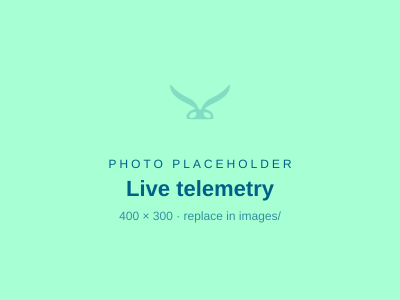
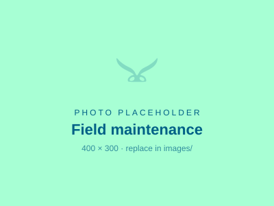
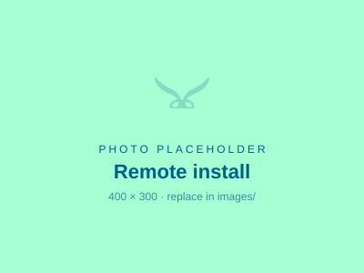

Live
24/7 Visibility
Track tank levels and system health from any device.
MothNode means fire cisterns and dry hydrants no longer cost your crews maintenance hours in routine checks, while becoming drastically more dependable as critical water sources when it matters most.
Reliable monitoring for fire protection and critical water access.

Track tank levels and system health from any device.
Notify responders the moment conditions shift.

Reduce routine checks and keep crews focused on response.

Deploy at cisterns, dry hydrants, and off-grid locations.
Check tank status, level trends, and system health from any location.
Know immediately when a source drops below expected capacity, or request an instant status check from the field.
Durable, low-maintenance monitoring built for demanding conditions.
MothNode is a remote tank monitoring system built for rural fire departments that depend on fire cisterns and dry hydrants for fire protection. Using low-power electronics, long-range LoRa and cellular telemetry, and precise liquid-level sensing, it automates water-level and battery monitoring, sends email and SMS alerts when thresholds are crossed, and supports on-demand checks. Every unit reports into the MothNode Dashboard, keeping critical water sources dependable across departments.
Trusted by fire departments, public works teams, and field crews.
"MothNode gives our crew confidence before every shift. We know our water sources are ready without sending someone out for a manual check."
"The alerts are immediate and the setup was straightforward. We reduced inspections while improving reliability."
"We installed MothNode at remote sites and immediately saw better visibility into issues we used to miss."
"The MothNode Dashboard makes it easy for our team to confirm water readiness before every callout."
"We cut down on unnecessary field visits while gaining much better confidence in our backup water sources."